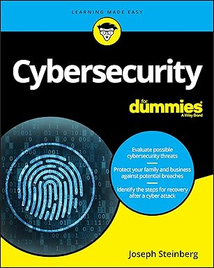

Cybersecurity For Dummies
This beginner-friendly guide breaks down the basics of staying safe online. Learn how to protect your devices, recognize phishing attempts, and safeguard your digital identity—whether at work or home. Written in a clear, approachable tone, this book is ideal for anyone looking to build foundational cybersecurity skills.
Author: Joseph Steinberg
Published: 2019
Genre: Cybersecurity, Technology, Nonfiction